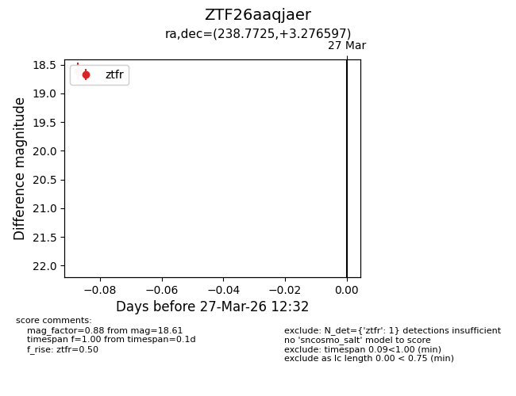
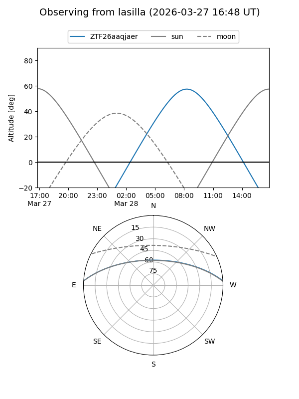
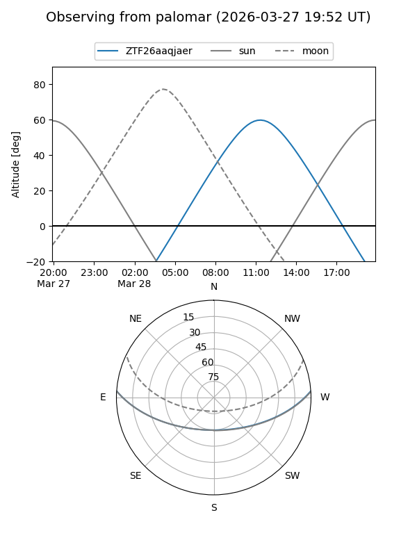

ZTF26aaqjaer
Target ZTF26aaqjaer at 2026-03-27 12:37
Aliases and brokers:
FINK: link
Lasair: link
ALeRCE: link
alt names
ZTF26aaqjaer (ztf,fink_ztf)
Coordinates:
equatorial (ra, dec) = 238.7725,+3.27660
equatorial (HMS+DMS) = 15:55:05.40,+03:16:35.75
galactic (l, b) = (12.5900,+40.11013)
Flags:
Photometry:
last ztfr=18.61
1 ztfr detections
Lightcurve

Visibility


Additional plots